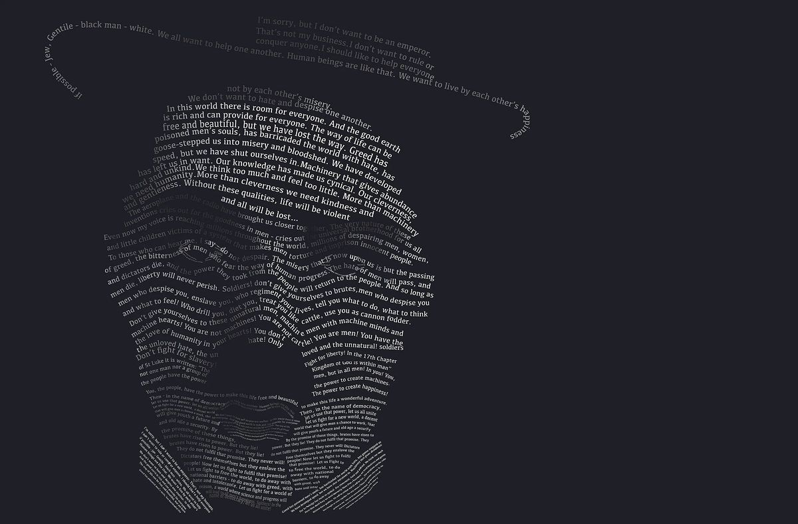

Case Study · Typography
The Great Dictator Typographic Portrait
A portrait of Charlie Chaplin built entirely from the words of his speech in The Great Dictator (1940).

- Medium
- Vector typographic portrait, grayscale on black
- Text
- Chaplin’s speech from The Great Dictator (1940)
- Tools
- Adobe Lightroom, Photoshop, Illustrator
Problem
The project required creating a portrait composed entirely of typography—no images, no brushes, and no raster elements. The process began with selecting a meaningful piece of text that could support both the conceptual and visual structure of the portrait. I chose Charlie Chaplin’s The Great Dictator speech, not just because it is iconic, but because it feels uncomfortably relevant today. Even though the film is from 1940, its warnings about authoritarianism, propaganda, and the persecution of vulnerable groups echo the tension in the United States right now—where democratic norms feel strained, marginalized communities are targeted, and political leaders increasingly frame critics, journalists, and opposing voices as enemies. The speech’s call for empathy, humanity, and resistance against tyranny felt like the right foundation for this project.
Once the text was chosen, I needed a portrait reference with clear lighting and recognizable structure—something that could translate into type-based shading without losing Chaplin’s identity. The challenge was to convert that image into a completely typographic system of shadows, highlights, and mid-tones. Every part of the portrait had to be built from words, letterforms, spacing, and density while keeping the speech readable enough for its message to survive. The core problem became balancing visual clarity with conceptual intent: creating a portrait that functions as an image, but also as a reminder of how easily history repeats itself.
Concept
My concept was to build a portrait that worked on two levels: the image of Charlie Chaplin, and the message of his speech woven directly into his face. Because The Great Dictator challenges authoritarianism and defends human dignity, I wanted the typography to do more than function as texture. The words needed to become the structural material of the portrait, as if the speech itself was shaping the figure and holding the image together. This allowed the piece to operate as both a portrait and a visual reminder of the message Chaplin delivered.
Choosing Chaplin was intentional. His speech is one of the clearest cinematic calls for compassion over cruelty, for democracy over tyranny, and for humanity over fear. But Chaplin also made sense from a visual standpoint. As a subject, he offers two iconic features that make him instantly recognizable even when abstracted: the narrow toothbrush mustache and the signature bowler hat of the Tramp persona. Those shapes provided strong anchors for the typographic structure, giving me clear areas of contrast and silhouette to build around while still honoring the constraints of type-only construction.
The grayscale palette and black background were deliberate choices to keep all the focus on value, hierarchy, and legibility. Removing color forced the typography to carry the entire image—strengthening the connection between the visual form and the ideas embedded in the text. The rationale was straightforward: if Chaplin’s speech still resonates today, the portrait should visually embody that relevance. Using type as the building block allowed me to merge message and medium, creating a piece that is both a technical study in typographic form and a commentary on the political atmosphere that made the text feel timely again.
Process Summary
I began by selecting a high-contrast reference portrait of Chaplin that clearly defined the planes of the face, the hat, and the mustache—features essential for maintaining recognizability once converted into type. In Illustrator, I blocked out the primary shapes using vector outlines to establish the structure of light and shadow. This step acted as a map for where different densities of text would sit.
Next, I imported the full transcript of The Great Dictator speech and began assigning portions of the text to specific tonal zones. Darker areas required heavier type density, larger weights, or tighter line spacing, while highlights relied on smaller fonts, lighter weights, or increased spacing. Throughout the buildup, I adjusted the angle and flow of the text to match the contour of the cheekbones, jawline, and hat brim. My goal was to let the typography follow the natural topography of the face rather than sit as a flat overlay.
Most of the work centered on balancing legibility and form. I avoided distorting the text beyond recognition, relying instead on subtle shifts in scale, rotation, and tracking to create volume. Layer organization was crucial—each structural area of the portrait lived on its own layer, allowing me to refine the value transitions without disrupting surrounding elements. Once the major forms were established, I refined edge clarity, removed visual noise, and unified the tonal range so the portrait read cleanly at both large and small sizes.
Tools and Techniques
I used a three-stage software workflow: Lightroom, Photoshop, and Illustrator to keep the portrait fully vector-based while giving myself a strong tonal foundation to work from.
The process began in Adobe Lightroom, where I prepared the reference image by adjusting exposure, contrast, clarity, and tonal balance. This helped isolate the major value shifts in Chaplin’s face, hat, and mustache, features essential for building readable typographic shading later. Lightroom’s tonal adjustments ensured that structural information wasn’t lost once the portrait moved into a type-only environment.
I then moved the processed image into Adobe Photoshop for refinement. Here, I cleaned edges, reduced noise, and simplified distracting micro-details that would interfere with text placement. I created several high-contrast grayscale versions that highlighted different shadow regions, providing multiple reference guides for Illustrator. This step went beyond the typical “image trace” shortcut often recommended in tutorials; instead, it gave me precise control over the shapes and tonal hierarchy that the typography would follow.
All final construction happened in Adobe Illustrator. I began by mapping the portrait into vector zones using the Pen Tool—essentially building a contour-and-shadow scaffold for typography to be anchored to. Using the text from The Great Dictator speech, I shaped the portrait through controlled variations in font size, weight, tracking, spacing, and rotation. Darker areas relied on dense clusters of type; highlights used lighter weights and open spacing. Clipping masks ensured that every text block stayed contained within its intended region, and careful layer organization allowed me to refine transitions without disrupting the overall structure.
This combination of software tools and the decision to treat the typography as both visual material and narrative content resulted in a more disciplined, legible, and structurally coherent portrait than a tutorial-based workflow alone would allow.
Outcome
The finished artwork is a fully vector-based typographic portrait that reads clearly at both small and large scales. By building the image exclusively from the text of The Great Dictator speech, the final piece merges Chaplin’s identity with the message that defines this moment in his career. The portrait remains instantly recognizable—anchored by the bowler hat, narrow mustache, and expressive eyes—while the typography provides all the shading, structure, and dimensionality.
The tonal system created in Illustrator holds together cleanly: shadows are formed through dense clusters of type, while mid-tones and highlights open up through lighter weights and increased spacing. Because the image was carefully pre-processed in Lightroom and Photoshop, the underlying form remains balanced and coherent, allowing the typography to follow natural contours rather than fight them. Even up close, the text remains legible, reinforcing the connection between visual form and narrative content.
Presenting the final portrait on a black background in grayscale keeps the focus on the type manipulation itself, highlighting the value transitions without distractions. The result is a polished and intentional piece that demonstrates control over typographic hierarchy, vector manipulation, and conceptual design. More importantly, the outcome reflects why I chose this subject in the first place: the speech still resonates today, and the portrait translates that relevance into a visual form that connects technique, message, and meaning.
Key Takeaway
This project reinforced how much control and intentionality typography can offer when it is treated as a structural material rather than a decorative element. Working within strict constraints—no images, no raster effects, no shortcuts—forced me to understand value, contour, and form at a deeper level. It also highlighted the importance of preparation: the clarity I achieved in Illustrator was only possible because the tonal groundwork was established in Lightroom and Photoshop.
Beyond the technical lessons, the project reminded me that design can carry a message without sacrificing craft. Chaplin’s speech still feels urgent today, and building his portrait from those words made the connection between form and meaning impossible to ignore. The result is both a typographic study and a commentary on the times we are living in, and it demonstrates how visual communication can echo, reinterpret, and extend the impact of powerful ideas.